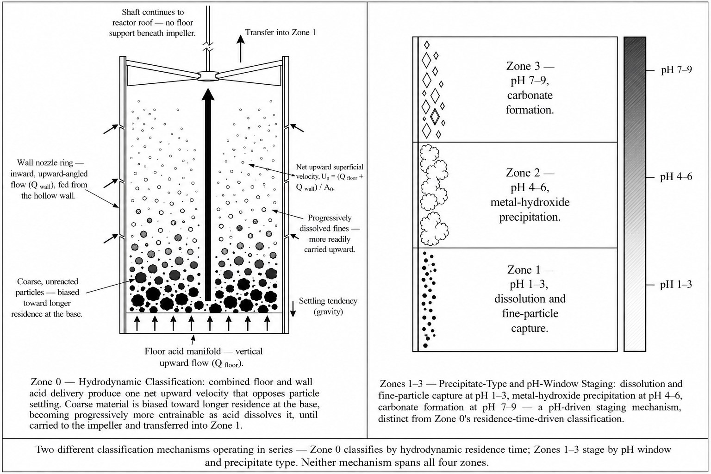

OlivAir
An independent reactor platform that turns industrial acid waste into a driver for permanent carbon mineralization — three mechanisms covered by a filed U.S. provisional patent application, and a ten-part paper series.
Three things had to be true at once for this mark to work — watch, or click through them.
The recycling symbol is the most recognized environmental icon in the world — circulation, reuse, continuity. The OlivAir mark starts with that familiarity and breaks it: three arms begin exactly as a loop would, then bend inward instead of closing it. Three waste streams enter the system; what looks like circulation is termination — nothing returns.
Where the loop would close, the mark narrows to a downward point instead — the reactor, where acid, mineral, and CO₂ converge into stable carbonate minerals that won't return to the atmosphere on any human timescale.
In the dark space the converging arms leave behind, a plant form emerges — not added as decoration, but carved by the geometry itself. I didn't invent the reaction. I just stopped wasting it.
A single reactor platform built around three mechanisms covered by a filed U.S. provisional patent application (No. 64/124,248), documented across a ten-part paper series.

OlivAir reactor platform
A shared reactor architecture coupling acid neutralization with mineral carbonation, documented across a ten-part paper series.

Protected-electrode chamber
An isolated chamber design that protects active electrode surfaces from fouling within the reactor body.

Multi-function baffle wall
A single structure that combines flow control and reaction staging, reducing the reactor's part count.

Hydrodynamic classification chamber
Sorts particles by settling behavior at reactor entry, before mineral dissolution begins.
Carbon credits are one piece, not the whole case: eliminating hazardous-waste disposal costs, avoiding purchased reagent, and selling the solid carbonate byproduct as aggregate each stand on their own — with coastal alkalinity enhancement as a further, more prospective co-benefit.
Industrial plants generate two things usually treated as separate costs: acidic waste streams that require neutralization, and alkaline mineral byproducts that get landfilled. OlivAir couples them — using waste acidity as the thermodynamic driver for mineral dissolution and CO₂ absorption within a single reactor, producing solid carbonate minerals as permanent carbon storage.
The first version of OlivAir was a passive, self-powered device that accelerated natural olivine weathering for carbon mineralization in tropical and coastal environments — solar-driven convective airflow, a photocatalytic TiO₂/zeolite coating, and an electret-based moisture system, with no electrochemistry or industrial input required. Entered as a team project into the Frost Science STEM Challenge, an engineering design competition on climate change hosted by the Phillip and Patricia Frost Museum of Science in Miami, it placed 2nd.
A later steel-slag-substrate iteration led to early technical dialogue with researchers at Yale University, and the project has since evolved into the multi-mechanism industrial platform above, with a filed U.S. provisional patent application (No. 64/124,248, filed August 2026) covering three of its mechanisms.
The platform is upfront about where it stands: TRL 2 — analytically modeled and internally consistent, not yet physically built or tested. I've laid out a defined lab-scale experimental path to close that gap, and I'm in early technical dialogue with researchers at Yale University about the work.
Six figures, from full reactor cutaway down to individual baffle geometry.
Every mechanism above traces back to a labeled diagram — reactor cutaway, hardware variants, baffle wall detail, electrode assembly, and zone-level hydrodynamics.
Most systems treat acidity as a liability to be neutralized. I treat it as the driver.
Let's talk.
I'm always glad to talk chemistry, carbon removal, or anything OlivAir related.